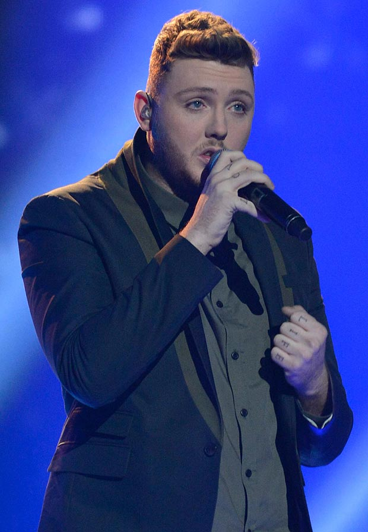

JAMES ARTHUR
El cantante nacido en Middlesborough, James Arthur, comenzó a escribir y grabar canciones cuando tenía solo 15 años. Llegó a la fama al ganar la serie de 2012 de The X-Factor con interpretaciones deslumbrantes de canciones como Sexy And I Know It de LMFAO, Can't Take My Eyes Off Of You de Frankie Valli y Fallin' de Alicia Keys. Inmediatamente después de ganar el programa, Arthur lanzó una versión de Impossible de la cantante barbadense Shontelle, que había cantado en la final. Alcanzó el número 1 en las listas de singles en el Reino Unido e Irlanda, y también entró en el top 10 en más de otros 20 países.
En 2013, Arthur firmó con el sello Syco de Simon Cowell. Más tarde ese año, lanzó su álbum de estudio debut homónimo, que incluía Impossible, You're Nobody 'Til Somebody Loves You y colaboraciones con Emeli Sandé y Chasing Grace. Debutó en el número 2 en la lista de álbumes del Reino Unido. Él mismo lanzó el mixtape All The World's A Stage en 2014 y presentó la canción Promise en YouTube en 2015. Tras el lanzamiento de su sencillo principal Say You Won't Let Go en septiembre de 2016, Arthur renunció a Syco y su segundo álbum Back From The Edge llegó un mes después. Alcanzó el número 1 en la lista de álbumes del Reino Unido y fue multiplatino en todo el mundo.

En 2017, Arthur colaboró con Machine Gun Kelly en Go For Broke y fue vocalista invitado en el sencillo Sun Comes Up de Rudimental. Además, publicó su autobiografía Back To The Boy. Arthur grabó un dueto llamado Rewrite The Stars con Anne-Marie para The Greatest Showman: Reimagined, una regrabación de la banda sonora original de la película, en 2018. Precedido por el sencillo Naked, su tercer álbum, YOU de 2019, contó con los éxitos Falling Like The Stars y Empty Space. En 2021, Arthur presentó el sencillo principal September y anunció que su cuarto álbum It'll All Make Sense In The End llegaría el 5 de noviembre de 2021.